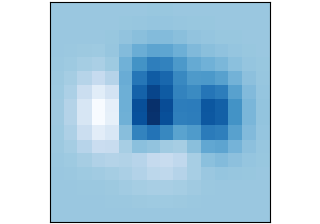
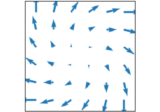

Gridded data#
Plots of arrays and images \(Z_{i, j}\) and fields \(U_{i, j}, V_{i, j}\) on regular grids and corresponding coordinate grids \(X_{i,j}, Y_{i,j}\).

imshow(Z)



quiver(X, Y, U, V)
Plots of arrays and images \(Z_{i, j}\) and fields \(U_{i, j}, V_{i, j}\) on regular grids and corresponding coordinate grids \(X_{i,j}, Y_{i,j}\).